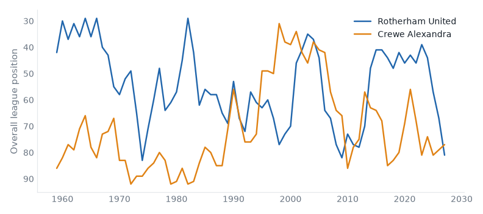
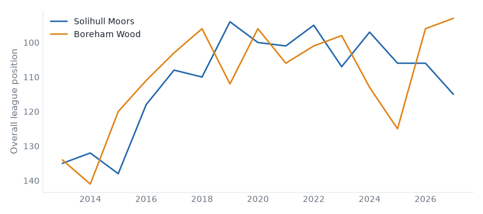

League One, League Two and the National League, 22 September to 28 September 2026. 26 results.Friday's preview.
Cambridge 1–1 AFC Wimbledon. Friday's case: above level, neighbours, yo-yo club, promoted last season. Cambridge stay 5th; AFC Wimbledon down from 7th to 8th.
Worthing 2–1 Halifax. Friday's case: below level, 2 above level, neighbours. Worthing up from 11th to 9th; Halifax down from 13th to 14th.
Altrincham 3–0 Hornchurch. Friday's case: 2 above level, neighbours. Altrincham up from 10th to 8th; Hornchurch down from 9th to 11th.
Scunthorpe 4–1 Hartlepool. Friday's case: below level, neighbours, yo-yo club. Scunthorpe up from 22nd to 20th; Hartlepool down from 19th to 21st.
Shrewsbury 2–2 Colchester. Friday's case: below level, neighbours, yo-yo club. Shrewsbury stay 18th; Colchester stay 15th.
York 3–0 Gillingham. Friday's case: below level, neighbours, yo-yo club, champions last season. York up from 7th to 4th; Gillingham down from 4th to 8th.
Carlisle 2–5 Woking. Friday's case: fallen giant, 2 below level, neighbours. Carlisle down from 16th to 19th; Woking up from 18th to 16th.
Southend 2–4 Barrow. Friday's case: 2 below level, yo-yo club, relegated last season. Southend stay 2nd; Barrow up from 17th to 15th.
Cheltenham 2–1 Chesterfield. Friday's case: below level, neighbours, yo-yo club. Cheltenham up from 5th to 2nd; Chesterfield down from 8th to 11th.
Stockport 1–0 Peterboro. Friday's case: above level, yo-yo club. Stockport up from 9th to 3rd; Peterboro stay 23rd.
Rotherham 1–1 Crewe
League Two, Sat 26 Sep
Crewe Alexandra have 6 draws in a row, their longest run in their record.

Solihull 0–3 Boreham Wood
National League, Sat 26 Sep
Boreham Wood have 26 points from 10 games, their best start in their record. Solihull Moors have 4 points from 10 games, their worst start in their record.

Wealdstone 4–0 Gateshead
National League, Sat 26 Sep
Gateshead have 4 points from 10 games, their worst start in their record.
Bristol Rvs 1–0 Exeter
League Two, Sat 26 Sep
Bristol Rovers have 15 points from 8 games, their best start since 2009/10. Exeter City have 6 points from 8 games, their worst start since 2016/17.
York 3–0 Gillingham
League Two, Sat 26 Sep
York City beat Gillingham for the first time since 1997/98.
Aldershot 5–1 Tamworth
National League, Sat 26 Sep
Aldershot Town beat Tamworth for the first time since 2013/14. Aldershot Town have 18 points from 10 games, their best start since 2016/17. Tamworth have 8 points from 10 games, their worst start since 2005/06.
Boston Utd 0–1 Fylde
National League, Sat 26 Sep
AFC Fylde have 20 points from 10 games, their best start since 2016/17.
Kidderminster 0–1 Yeovil
National League, Sat 26 Sep
Yeovil Town beat Kidderminster Harriers for the first time since 2004/05. Yeovil Town have 18 points from 10 games, their best start since 2004/05.
Southend 2–4 Barrow
National League, Sat 26 Sep
Barrow beat Southend United for the first time since 1971/72. Southend United have 20 points from 10 games, their best start since 2014/15.
| Sat 26 | Cambridge | 1–1 | AFC Wimbledon | ↓1 | |
| Sat 26 | Plymouth | 0–1 | Burton | ↓1 ↑5 | first win v Plymouth Argyle since 2018/19 |
| Sat 26 | Stockport | 1–0 | Peterboro | ↑6 | |
| Sat 26 | Wycombe | 2–2 | Reading | ↑2 ↓1 |
| P | W | D | L | GD | Pts | ||
|---|---|---|---|---|---|---|---|
| 1 | Sheffield Wednesday | 3 | 3 | 0 | 0 | +3 | 9 |
| 2 | Bradford City | 4 | 3 | 0 | 1 | +1 | 9 |
| 3 | Leyton Orient | 3 | 2 | 1 | 0 | +7 | 7 |
| 4 | Stockport County | 4 | 2 | 1 | 1 | +4 | 7 |
| 5 | Plymouth Argyle | 4 | 2 | 1 | 1 | +1 | 7 |
| 6 | Wycombe Wanderers | 4 | 2 | 1 | 1 | -2 | 7 |
| 7 | Oxford United | 3 | 2 | 0 | 1 | +3 | 6 |
| 8 | Cambridge United | 4 | 1 | 3 | 0 | +1 | 6 |
| 9 | Leicester City | 4 | 1 | 3 | 0 | +1 | 6 |
| 10 | Burton Albion | 4 | 2 | 0 | 2 | -2 | 6 |
| 11 | Stevenage | 4 | 1 | 2 | 1 | +3 | 5 |
| 12 | Huddersfield Town | 4 | 1 | 2 | 1 | 0 | 5 |
| 13 | Doncaster Rovers | 4 | 1 | 1 | 2 | 0 | 4 |
| 14 | Barnsley | 3 | 1 | 1 | 1 | -1 | 4 |
| 15 | AFC Wimbledon | 4 | 1 | 1 | 2 | -4 | 4 |
| 16 | Bromley | 3 | 1 | 1 | 1 | -4 | 4 |
| 17 | Blackpool | 3 | 1 | 0 | 2 | -2 | 3 |
| 18 | MK Dons | 4 | 0 | 3 | 1 | -2 | 3 |
| 19 | Notts County | 4 | 0 | 3 | 1 | -2 | 3 |
| 20 | Luton Town | 3 | 1 | 0 | 2 | -3 | 3 |
| 21 | Reading | 3 | 0 | 2 | 1 | -1 | 2 |
| 22 | Wigan Athletic | 3 | 0 | 1 | 2 | -2 | 1 |
| 23 | Mansfield Town | 4 | 0 | 1 | 3 | -7 | 1 |
| 24 | Peterborough United | 4 | 0 | 1 | 3 | -7 | 1 |
| Sat 26 | Bristol Rvs | 1–0 | Exeter | ↑3 ↓1 | best start since 2009/10 |
| Sat 26 | Cheltenham | 2–1 | Chesterfield | ↑3 ↓3 | best start since 2020/21 |
| Sat 26 | Fleetwood Town | 1–2 | Rochdale | ↓3 ↑1 | first win v Fleetwood Town since 2020/21 |
| Sat 26 | Newport County | 2–1 | Grimsby | ↑2 ↓3 | first win v Grimsby Town since 2020/21 |
| Sat 26 | Oldham | 1–4 | Salford | ↓4 ↑5 | |
| Sat 26 | Rotherham | 1–1 | Crewe | ↑1 | 6 draws, longest on record |
| Sat 26 | Shrewsbury | 2–2 | Colchester | best start since 2021/22 | |
| Sat 26 | Swindon | 1–1 | Accrington | ↑1 ↑2 | |
| Sat 26 | Tranmere | 1–1 | Walsall | ↓3 | best start since 2021/22 |
| Sat 26 | York | 3–0 | Gillingham | ↑3 ↓4 | first win v Gillingham since 1997/98 |
| P | W | D | L | GD | Pts | ||
|---|---|---|---|---|---|---|---|
| 1 | Walsall | 4 | 1 | 3 | 0 | +3 | 6 |
| 2 | Crewe Alexandra | 4 | 1 | 3 | 0 | +1 | 6 |
| 3 | Chesterfield | 4 | 2 | 0 | 2 | 0 | 6 |
| 4 | Barnet | 3 | 1 | 2 | 0 | +2 | 5 |
| 5 | Cheltenham Town | 4 | 1 | 2 | 1 | +1 | 5 |
| 6 | Gillingham | 4 | 1 | 2 | 1 | 0 | 5 |
| 7 | Fleetwood Town | 4 | 1 | 2 | 1 | -1 | 5 |
| 8 | Salford City | 4 | 1 | 1 | 2 | 0 | 4 |
| 9 | Rotherham United | 4 | 1 | 1 | 2 | -1 | 4 |
| 10 | Crawley Town | 4 | 1 | 1 | 2 | -2 | 4 |
| 11 | Rochdale | 4 | 1 | 1 | 2 | -3 | 4 |
| 12 | Grimsby Town | 4 | 0 | 3 | 1 | -1 | 3 |
| 13 | Tranmere Rovers | 4 | 0 | 3 | 1 | -2 | 3 |
| 14 | Bristol Rovers | 4 | 1 | 0 | 3 | -4 | 3 |
| 15 | York City | 4 | 0 | 2 | 2 | -3 | 2 |
| 16 | Colchester United | 4 | 0 | 2 | 2 | -4 | 2 |
| 17 | Northampton Town | 3 | 0 | 1 | 2 | -3 | 1 |
| 18 | Accrington Stanley | 4 | 0 | 1 | 3 | -4 | 1 |
| 19 | Newport County | 4 | 0 | 1 | 3 | -4 | 1 |
| 20 | Oldham Athletic | 4 | 0 | 1 | 3 | -5 | 1 |
| 21 | Shrewsbury Town | 4 | 0 | 1 | 3 | -7 | 1 |
| 22 | Swindon Town | 4 | 0 | 1 | 3 | -8 | 1 |
| 23 | Exeter City | 4 | 0 | 0 | 4 | -4 | 0 |
| 24 | Port Vale | 4 | 0 | 0 | 4 | -7 | 0 |
| Sat 26 | Aldershot | 5–1 | Tamworth | ↑3 ↓1 | first win v Tamworth since 2013/14 |
| Sat 26 | Altrincham | 3–0 | Hornchurch | ↑2 ↓2 | best start since 2021/22 |
| Sat 26 | Boston Utd | 0–1 | Fylde | ↓3 ↑1 | best start since 2016/17 |
| Sat 26 | Carlisle | 2–5 | Woking | ↓3 ↑2 | |
| Sat 26 | Harrogate | 4–1 | Eastleigh | ↑1 ↓1 | first win v Eastleigh since 2019/20 |
| Sat 26 | Kidderminster | 0–1 | Yeovil | ↓4 ↑1 | first win v Kidderminster Harriers since 2004/05 |
| Sat 26 | Scunthorpe | 4–1 | Hartlepool | ↑2 ↓2 | |
| Sat 26 | Solihull | 0–3 | Boreham Wood | best start on record | |
| Sat 26 | Southend | 2–4 | Barrow | ↑2 | first win v Southend United since 1971/72 |
| Sat 26 | Sutton | 3–3 | Forest Green | ↓4 ↑2 | best start since 2021/22 |
| Sat 26 | Wealdstone | 4–0 | Gateshead | ↑3 | worst start on record |
| Sat 26 | Worthing | 2–1 | Halifax | ↑2 ↓1 | 3 wins, longest since 2018/19 |
| P | W | D | L | GD | Pts | ||
|---|---|---|---|---|---|---|---|
| 1 | Boreham Wood | 6 | 5 | 1 | 0 | +10 | 16 |
| 2 | AFC Fylde | 6 | 5 | 0 | 1 | +7 | 15 |
| 3 | Southend United | 5 | 3 | 2 | 0 | +9 | 11 |
| 4 | Aldershot Town | 5 | 2 | 2 | 1 | +1 | 8 |
| 5 | Yeovil Town | 5 | 2 | 2 | 1 | +1 | 8 |
| 6 | Forest Green Rovers | 5 | 2 | 2 | 1 | 0 | 8 |
| 7 | Boston United | 4 | 2 | 1 | 1 | +3 | 7 |
| 8 | Kidderminster Harriers | 4 | 2 | 1 | 1 | +2 | 7 |
| 9 | Wealdstone | 5 | 2 | 1 | 2 | +2 | 7 |
| 10 | Worthing | 4 | 2 | 1 | 1 | +2 | 7 |
| 11 | Sutton United | 4 | 2 | 1 | 1 | +1 | 7 |
| 12 | Barrow | 6 | 1 | 3 | 2 | -1 | 6 |
| 13 | Harrogate Town | 4 | 2 | 0 | 2 | -1 | 6 |
| 14 | Altrincham | 5 | 2 | 0 | 3 | -4 | 6 |
| 15 | Hornchurch | 6 | 2 | 0 | 4 | -8 | 6 |
| 16 | Woking | 5 | 1 | 1 | 3 | -1 | 4 |
| 17 | FC Halifax Town | 5 | 1 | 0 | 4 | -3 | 3 |
| 18 | Scunthorpe United | 5 | 1 | 0 | 4 | -3 | 3 |
| 19 | Eastleigh | 5 | 1 | 0 | 4 | -5 | 3 |
| 20 | Hartlepool United | 6 | 1 | 0 | 5 | -7 | 3 |
| 21 | Carlisle United | 4 | 0 | 2 | 2 | -2 | 2 |
| 22 | Solihull Moors | 4 | 0 | 1 | 3 | -8 | 1 |
| 23 | Tamworth | 6 | 0 | 1 | 5 | -12 | 1 |
| 24 | Gateshead | 6 | 0 | 0 | 6 | -14 | 0 |
Boreham Wood: 13 games unbeaten in a row; the record is 15 (2019/20).
Crewe Alexandra: 6 draws in a row, equalling their record (2026/27).
Exeter City: 4 games without scoring in a row; the record is 6 (1985/86).
Worthing: 3 wins in a row; the record is 4 (2016/17).
Accrington Stanley: 2 draws in a row; the record is 4 (2018/19).
AFC Wimbledon: 2 draws in a row; the record is 4 (2009/10).
Kidderminster Harriers: 2 games without scoring in a row; the record is 4 (2000/01).
Sutton United: 2 draws in a row; the record is 4 (2016/17).
Built from the English football database, tiers 1–5 from 1958/59. Results from football-data.co.uk. Archived copy.